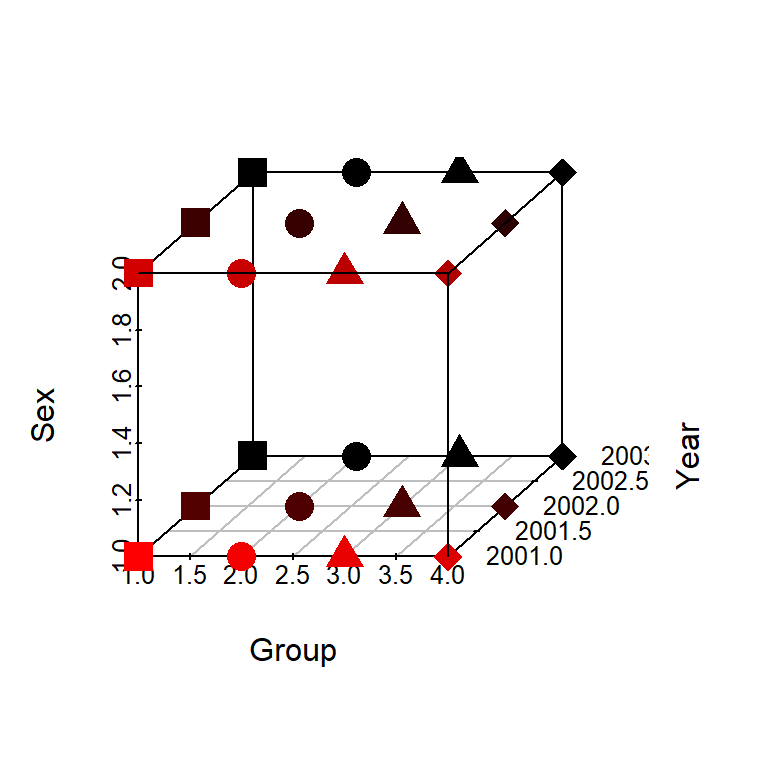

Working with 3D array as long-format data in R
This migrated post preserves the original rendered output. The original R Markdown source is available as source.Rmd.
check.and.install.pkgs <- function(pkgs){
new.packages <- pkgs[!pkgs %in% installed.packages()[,"Package"]]
if(length(new.packages)) install.packages(new.packages, dependencies = TRUE)
suppressPackageStartupMessages(invisible(lapply(pkgs, library, character.only = TRUE)))
}
check.and.install.pkgs(c("data.table", "reshape2", "scatterplot3d"))Happy New Year!
Recently I spent some time working with array in R.
I believe it is a bad idea to work with array using for loop, which is both slow and error-prone. We can just melt it into a long data, do the work, and arrange back into array in the end if needed.
Example: a 3-D array with dimension 4x3x2
Notice how the values (1:24) fill into the three dimentions, The values 1:12 go into the 1st 4x3 matrix by column, then the rest go into the 2nd 4x3 matrix.
arr = array(1:24, dim=c(4,3,2), dimnames = list(group = LETTERS[1:4], year = 2001:2003, sex = c("F", "M")))
arr## , , sex = F
##
## year
## group 2001 2002 2003
## A 1 5 9
## B 2 6 10
## C 3 7 11
## D 4 8 12
##
## , , sex = M
##
## year
## group 2001 2002 2003
## A 13 17 21
## B 14 18 22
## C 15 19 23
## D 16 20 24Melt into long
Melt directly, and in the long-format data, the values are sorted exactly from 1 to 24
arr_long <- reshape2::melt(arr)
rmarkdown::paged_table(arr_long)Thus if we create an array with the same dimension, it reverts back to the original one
arr2 <- array(data = arr_long$value,
dim = c(4,3,2))
identical(unname(arr), arr2) # since I did not set dimnames for arr2, I need `unname`## [1] TRUERecover the array
But the problem is we usually need to work on the data and the row orders will change.
For example, to add another year of data. And in many other cases, it is just easier to work with the long-format data.
arr_long_extra <- expand.grid(group = LETTERS[1:4], year = 2004, sex = c("F", "M"))
arr_long_extra$value <- 100 + 1:8
arr_long_extra## group year sex value
## 1 A 2004 F 101
## 2 B 2004 F 102
## 3 C 2004 F 103
## 4 D 2004 F 104
## 5 A 2004 M 105
## 6 B 2004 M 106
## 7 C 2004 M 107
## 8 D 2004 M 108arr_long_new <- rbind(arr_long, arr_long_extra)Set the rows in the right order is the key to produce the right array
Since the original dimension 4x3x2 corresponds to group x year x sex, the array should be ordered by sex, year, and group if we want to recover the original array. (Thus the arr_long is in the right order if we don’t resort it.)
# order by sex, year, group
arr_long_new <- arr_long_new[with(arr_long_new, order(sex, year, group)),]
# create new array with 4 groups x 4 years x 2 sex categories
# The order of the values will fill into the dimensions correctly:
arr_long_new$value## [1] 1 2 3 4 5 6 7 8 9 10 11 12 101 102 103 104 13 14 15
## [20] 16 17 18 19 20 21 22 23 24 105 106 107 108array(arr_long_new$value, dim=c(4,4,2), dimnames = list(group = LETTERS[1:4], year = 2001:2004, sex = c("F", "M")))## , , sex = F
##
## year
## group 2001 2002 2003 2004
## A 1 5 9 101
## B 2 6 10 102
## C 3 7 11 103
## D 4 8 12 104
##
## , , sex = M
##
## year
## group 2001 2002 2003 2004
## A 13 17 21 105
## B 14 18 22 106
## C 15 19 23 107
## D 16 20 24 108
Notice that the extra values from arr_long_extra have been added correctly into the array.
# Alternatively, if you use data.table, this does the same thing:
data.table::setorder(arr_long_new, sex, year, group)
Similarly, we can set one dimension of the array by a specific order or using another vector.
Suppose I want to reorder the year variable as year_order:
year_order <- c("2003", "2001", "2002")
arr_long2 <- arr_long[with(arr_long, order(sex, match(year, year_order), group)),]
# notice that the new dimnames need to be assigned correctly (manually)
# as the array arranges the values correctly, there is no name automatically linked to the value
arr3 <- array(arr_long2$value, dim=c(4,3,2), dimnames = list(group = LETTERS[1:4], year = year_order, sex = c("F", "M")))
arr3## , , sex = F
##
## year
## group 2003 2001 2002
## A 9 1 5
## B 10 2 6
## C 11 3 7
## D 12 4 8
##
## , , sex = M
##
## year
## group 2003 2001 2002
## A 21 13 17
## B 22 14 18
## C 23 15 19
## D 24 16 20It is the same as reordering the 2nd dimension of array:
identical(arr3,
arr[, order(match(dimnames(arr)[[2]], year_order)),]
)## [1] TRUETo visualize the array, the long data is required as well
library("scatterplot3d")
shapes <- 15:18
shapes <- shapes[as.numeric(arr_long$group)]
# haven't figured out how to round the axis annotation
scatterplot3d(arr_long, pch = shapes, cex.symbols = 2,
xlab = "Group", ylab = "Year", zlab = "Sex",
highlight.3d = TRUE)
